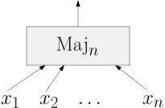
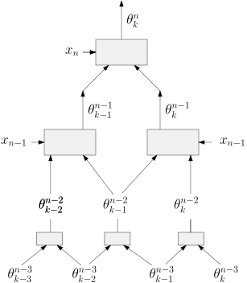
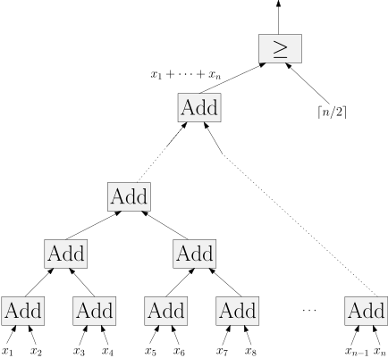
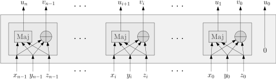

2.5 Majority./course1/wly/02/05-majority.wly:2:11
Unser Ziel in diesem Teilkapitel ist es, Schaltkreise für./course1/wly/02/05-majority.wly:4:5 die Majority-Funktion zu bauen:./course1/wly/02/05-majority.wly:5:5

course1/public/img/circuits/circuits.ipecourse1/public/img/circuits/majority.svg
Diese nimmt ./course1/wly/02/05-majority.wly:13:5$n$./course1/wly/02/05-majority.wly:13:17 Bits als Input und gibt 1 aus, wenn mehr./course1/wly/02/05-majority.wly:13:20 als ./course1/wly/02/05-majority.wly:14:5$n/2$./course1/wly/02/05-majority.wly:14:9 davon 1 sind. Für ./course1/wly/02/05-majority.wly:14:14$n=3$./course1/wly/02/05-majority.wly:14:33 heißt dass, das./course1/wly/02/05-majority.wly:14:38 mindestens zwei Input-Bits 1 sein müssen. Als Formel kann./course1/wly/02/05-majority.wly:15:5 man das so schreiben:./course1/wly/02/05-majority.wly:16:5
$$
\maj_3(x,y,z) = (x \wedge y) \vee (x \wedge z) \vee (y \wedge z)
$$./course1/wly/02/05-majority.wly:18:5
und als Schaltkreis so:./course1/wly/02/05-majority.wly:22:5
 course1/public/img/circuits/maj3.svg
course1/public/img/circuits/maj3.svg
Wie können wir das sinnvoll verallgemeinern für größere./course1/wly/02/05-majority.wly:29:5 ./course1/wly/02/05-majority.wly:30:5$n$./course1/wly/02/05-majority.wly:30:5?./course1/wly/02/05-majority.wly:30:8 Was geschieht, wenn wir einfach die./course1/wly/02/05-majority.wly:30:8 Wahrheitstabellen-Methode anwenden? Falls ./course1/wly/02/05-majority.wly:31:5$n$./course1/wly/02/05-majority.wly:31:47 ungerade./course1/wly/02/05-majority.wly:31:50 ist, dann sieht man leicht, dass die Wahrheitstabelle in./course1/wly/02/05-majority.wly:32:5 genau ./course1/wly/02/05-majority.wly:33:5$2^{n-1}$./course1/wly/02/05-majority.wly:33:11 vielen Zeilen eine 1 stehen hat und in./course1/wly/02/05-majority.wly:33:20 ebenso vielen eine 0../course1/wly/02/05-majority.wly:34:5
Übungsaufgabe 2.5.1./course1/wly/02/05-majority.wly:36:5 ./course1/wly/02/05-majority.wly:36:5 Sei ./course1/wly/02/05-majority.wly:37:9$n$./course1/wly/02/05-majority.wly:37:13 eine ungerade Zahl. Zeigen Sie, dass ./course1/wly/02/05-majority.wly:37:16$\maj_n$./course1/wly/02/05-majority.wly:37:54 für./course1/wly/02/05-majority.wly:37:62 genau die Hälfte aller ./course1/wly/02/05-majority.wly:38:9$2^n$./course1/wly/02/05-majority.wly:38:32 möglichen Eingaben eine 1./course1/wly/02/05-majority.wly:38:37 ausgibt (und für die andere Hälfte eine 0)../course1/wly/02/05-majority.wly:39:9
Wir erhielten also eine DNF mit ./course1/wly/02/05-majority.wly:41:5$2^{n-1}$./course1/wly/02/05-majority.wly:41:37 vielen./course1/wly/02/05-majority.wly:41:46 AND-Gates. Das ist sehr groß, gemessen daran, dass Zählen./course1/wly/02/05-majority.wly:42:5 und mit ./course1/wly/02/05-majority.wly:43:5$n/2$./course1/wly/02/05-majority.wly:43:13 vergleichen ja nicht besonders schwierig./course1/wly/02/05-majority.wly:43:18 klingt. Hier ist eine kleine Verbesserung, demonstriert am./course1/wly/02/05-majority.wly:44:5 Beispiel ./course1/wly/02/05-majority.wly:45:5$n=7$./course1/wly/02/05-majority.wly:45:14../course1/wly/02/05-majority.wly:45:19 Wenn wir für ./course1/wly/02/05-majority.wly:45:19$n=7$./course1/wly/02/05-majority.wly:45:34 mit Hilfe einer./course1/wly/02/05-majority.wly:45:39 Wahrheitstabelle eine DNF konstruieren, erhalten wir ja./course1/wly/02/05-majority.wly:46:5 unter Anderem den Term./course1/wly/02/05-majority.wly:47:5
$$
T := x_1 \bar{x}_2 x_3 x_4 \bar{x}_5 x_6 x_7 \ ,
$$./course1/wly/02/05-majority.wly:49:5
da der Input ./course1/wly/02/05-majority.wly:53:5$\maj_7(1011011) = 1$./course1/wly/02/05-majority.wly:53:18 ist. Schauen wir uns./course1/wly/02/05-majority.wly:53:39 nun den Term ./course1/wly/02/05-majority.wly:54:5$T'$./course1/wly/02/05-majority.wly:54:18 an, den wir erhalten, wenn wir alle./course1/wly/02/05-majority.wly:54:22 negativen Literale aus ./course1/wly/02/05-majority.wly:55:5$T$./course1/wly/02/05-majority.wly:55:28 löschen:./course1/wly/02/05-majority.wly:55:31
$$
T' := x_1 x_3 x_4 x_6 x_7 \ .
$$./course1/wly/02/05-majority.wly:57:5
Wenn dieser Term 1 wird, dann sind./course1/wly/02/05-majority.wly:61:5 ./course1/wly/02/05-majority.wly:62:5$x_1 = x_3 = x_4 = x_6 = x_7$./course1/wly/02/05-majority.wly:62:5 sein, also insgesamt fünf./course1/wly/02/05-majority.wly:62:34 Input-Bits 1, und ./course1/wly/02/05-majority.wly:63:5$\maj_7$./course1/wly/02/05-majority.wly:63:23 gibt 1 aus. Hier ist also eine./course1/wly/02/05-majority.wly:63:31 Vereinfachung: wir folgen der Wahrheitstabellen-Methode,./course1/wly/02/05-majority.wly:64:5 lassen aber alle negativen Literale weg. Das Ergebnis ist./course1/wly/02/05-majority.wly:65:5 etwas kleiner und immer noch korrekt. Schauen Sie sich nun./course1/wly/02/05-majority.wly:66:5 den Term./course1/wly/02/05-majority.wly:67:5
$$
x_1 \bar{x}_2 \bar{x}_3 x_4 \bar{x}_5 x_6 x_7
$$./course1/wly/02/05-majority.wly:69:5
an. Auch dieser kommt in der Wahrheitstabelle vor, da./course1/wly/02/05-majority.wly:73:5 ./course1/wly/02/05-majority.wly:74:5$\maj_7(1001011)=1$./course1/wly/02/05-majority.wly:74:5 gilt. In unserer neuen Konstruktion./course1/wly/02/05-majority.wly:74:24 wird dieser zu ./course1/wly/02/05-majority.wly:75:5$x_1 x_4 x_6 x_7$./course1/wly/02/05-majority.wly:75:20 vereinfacht. Nun schauen./course1/wly/02/05-majority.wly:75:37 Sie: wenn ./course1/wly/02/05-majority.wly:76:5$T'$./course1/wly/02/05-majority.wly:76:15 den Wert 1 ausgibt, dann gibt./course1/wly/02/05-majority.wly:76:19 ./course1/wly/02/05-majority.wly:77:5$x_1 x_4 x_6 x_7$./course1/wly/02/05-majority.wly:77:5 auf jeden Fall 1 aus, und ./course1/wly/02/05-majority.wly:77:22$\maj_7$./course1/wly/02/05-majority.wly:77:49 wird./course1/wly/02/05-majority.wly:77:57 1; ./course1/wly/02/05-majority.wly:78:5$T'$./course1/wly/02/05-majority.wly:78:8 ist also redundant. Irgendwie ist das ja auch./course1/wly/02/05-majority.wly:78:12 klar: zu verlangen, dass die fünf Variablen./course1/wly/02/05-majority.wly:79:5 ./course1/wly/02/05-majority.wly:80:5$x_1, x_3, x_4 x_6, x_7$./course1/wly/02/05-majority.wly:80:5 alle mit 1 abstimmen, ist zwar./course1/wly/02/05-majority.wly:80:29 hinreichend, aber eben schon mehr als nötig. Es reicht./course1/wly/02/05-majority.wly:81:5 also, sich auf alle Terme mit genau 4 Variablen zu./course1/wly/02/05-majority.wly:82:5 beschränken. Im allgemeinen sei ./course1/wly/02/05-majority.wly:83:5$k = \ceil{\frac{k+1}{2}}$./course1/wly/02/05-majority.wly:83:37../course1/wly/02/05-majority.wly:83:63 ./course1/wly/02/05-majority.wly:83:63 Dann gilt./course1/wly/02/05-majority.wly:84:5
$$
\begin{align}
\maj_n (x_1,\dots,x_n) = \bigvee_{\substack{I \subseteq [n] \\ |I| = k}} \bigwedge_{i \in I} x_i
.
\end{align}
$$./course1/wly/02/05-majority.wly:86:5
Diese Konstruktion hat nun ./course1/wly/02/05-majority.wly:91:5${n \choose k}$./course1/wly/02/05-majority.wly:91:32 Terme, von./course1/wly/02/05-majority.wly:91:47 denen jeder aus ./course1/wly/02/05-majority.wly:92:5$k$./course1/wly/02/05-majority.wly:92:21 Variablen besteht. Ist das nun gut./course1/wly/02/05-majority.wly:92:24 oder schlecht?./course1/wly/02/05-majority.wly:93:5
Lemma 2.5.1./course1/wly/02/05-majority.wly:95:5 ./course1/wly/02/05-majority.wly:95:5 Es gilt./course1/wly/02/05-majority.wly:96:9
$$
{n \choose {\ceil{n/2}}} \geq \frac{2^n}{n+1} \ .
$$./course1/wly/02/05-majority.wly:98:9
Beweis Sei ./course1/wly/02/05-majority.wly:103:9$k \in \{1,\dots,n\}$./course1/wly/02/05-majority.wly:103:13../course1/wly/02/05-majority.wly:103:34 Vergleichen wir ./course1/wly/02/05-majority.wly:103:34${n \choose k}$./course1/wly/02/05-majority.wly:103:52 ./course1/wly/02/05-majority.wly:103:67 mit ./course1/wly/02/05-majority.wly:104:9${n \choose k-1}$./course1/wly/02/05-majority.wly:104:13:./course1/wly/02/05-majority.wly:104:30
$$
\begin{align*}
\frac{{n \choose k}}{{n \choose k-1}} & =
\frac{ \frac{n!}{k! (n-k)!}}{\frac{n!}{ (k-1)! (n-k+1)!}} = \frac{n-k+1}{k}
\end{align*}
$$./course1/wly/02/05-majority.wly:106:9
und somit./course1/wly/02/05-majority.wly:111:9
$$
\begin{align*}
{n \choose k} & \geq {n \choose k-1} \quad \Longleftrightarrow \\
n-k+1 & \geq k \quad \Longleftrightarrow \\
2k & \leq n+1 \quad \Longleftrightarrow \\
k & \leq \frac{n+1}{2} \quad \Longleftrightarrow \\
k & \leq \floor{ \frac{n+1}{2}} = \ceil{\frac{n}{2}} \ .
\end{align*}
$$./course1/wly/02/05-majority.wly:113:9
Aus der letzten Zeile folgt nun, dass ./course1/wly/02/05-majority.wly:121:9${n \choose k}$./course1/wly/02/05-majority.wly:121:47 ./course1/wly/02/05-majority.wly:121:62 durch ./course1/wly/02/05-majority.wly:122:9$k := \ceil{\frac{n}{2}}$./course1/wly/02/05-majority.wly:122:15 maximiert wird, also./course1/wly/02/05-majority.wly:122:40 ./course1/wly/02/05-majority.wly:123:9${n \choose k} \leq {n \choose \ceil{\frac{n}{2}}}$./course1/wly/02/05-majority.wly:123:9 gilt../course1/wly/02/05-majority.wly:123:60 Als nächstes müssen wir uns die Definition von./course1/wly/02/05-majority.wly:124:9 ./course1/wly/02/05-majority.wly:125:9${n \choose k}$./course1/wly/02/05-majority.wly:125:9 ins Gedächtnis rufen. Nein,./course1/wly/02/05-majority.wly:125:24 ./course1/wly/02/05-majority.wly:126:9$\frac{n!}{k!(n-k)!}$./course1/wly/02/05-majority.wly:126:9 ist nicht die Definition, sondern./course1/wly/02/05-majority.wly:126:30 eine Formel dafür. Die Definition ist: ./course1/wly/02/05-majority.wly:127:9${n \choose k}$./course1/wly/02/05-majority.wly:127:48 ist./course1/wly/02/05-majority.wly:127:63 die Menge der Teilmengen von ./course1/wly/02/05-majority.wly:128:9$\{1,\dots,n\}$./course1/wly/02/05-majority.wly:128:38,./course1/wly/02/05-majority.wly:128:53 die Größe ./course1/wly/02/05-majority.wly:128:53$k$./course1/wly/02/05-majority.wly:128:65 ./course1/wly/02/05-majority.wly:128:68 haben. Wieviele Teilmenge (jeglicher Größe) gibt es./course1/wly/02/05-majority.wly:129:9 insgesamt? Genau ./course1/wly/02/05-majority.wly:130:9$2^n$./course1/wly/02/05-majority.wly:130:26 viele: Sie müssen für jede Zahl./course1/wly/02/05-majority.wly:130:31 ./course1/wly/02/05-majority.wly:131:9$i \in \{1,\dots,n\}$./course1/wly/02/05-majority.wly:131:9 die Entscheidung treffen, ob ./course1/wly/02/05-majority.wly:131:30$i$./course1/wly/02/05-majority.wly:131:60 in./course1/wly/02/05-majority.wly:131:63 die Menge soll oder nicht, haben also insgesamt ./course1/wly/02/05-majority.wly:132:9$2^n$./course1/wly/02/05-majority.wly:132:57 ./course1/wly/02/05-majority.wly:132:62 Wahlmöglichkeiten. Daher gilt:./course1/wly/02/05-majority.wly:133:9
$$
\sum_{k=0}^n {n \choose k} = 2^n \ .
$$./course1/wly/02/05-majority.wly:135:9
Intuitiv gesprochen heißt das: diese Summe hat ./course1/wly/02/05-majority.wly:139:9$n+1$./course1/wly/02/05-majority.wly:139:56 Terme./course1/wly/02/05-majority.wly:139:61 ( ./course1/wly/02/05-majority.wly:140:9$k$./course1/wly/02/05-majority.wly:140:11 wandert von 0 bis ./course1/wly/02/05-majority.wly:140:14$n$./course1/wly/02/05-majority.wly:140:33,./course1/wly/02/05-majority.wly:140:36 also muss der größte Term./course1/wly/02/05-majority.wly:140:36 mindestens ein ./course1/wly/02/05-majority.wly:141:9$(n+1)$./course1/wly/02/05-majority.wly:141:24-tel./course1/wly/02/05-majority.wly:141:31 des Gesamtbetrages sein../course1/wly/02/05-majority.wly:141:31 Formal:./course1/wly/02/05-majority.wly:142:9
$$
2^n = \sum_{k=0}^n {n \choose k} \leq \sum_{k=0}^n {n \choose \ceil{\frac{n}{2}}}
= (n+1) \cdot {n \choose \ceil{\frac{n}{2}}}
$$./course1/wly/02/05-majority.wly:144:9
und somit./course1/wly/02/05-majority.wly:149:9
$$
{n \choose \ceil{\frac{n}{2}}} \geq \frac{2^n} {n+1} \ ,
$$./course1/wly/02/05-majority.wly:151:9
wie behauptet../course1/wly/02/05-majority.wly:155:9A\(\square\)
Unsere neue, bessere Konstruktion benötigt also immer noch./course1/wly/02/05-majority.wly:157:5 mindestens ./course1/wly/02/05-majority.wly:158:5$\frac{2^n}{n+1}$./course1/wly/02/05-majority.wly:158:16 Terme, was bereits für./course1/wly/02/05-majority.wly:158:33 moderate Werte wie ./course1/wly/02/05-majority.wly:159:5$n=30$./course1/wly/02/05-majority.wly:159:24 nicht vertretbar ist../course1/wly/02/05-majority.wly:159:30
Majority Top-Down mit
./course1/wly/02/05-majority.wly:162:9if-then-else./course1/wly/02/05-majority.wly:162:32-Gates./course1/wly/02/05-majority.wly:162:45
Wenden wir nun statt Wahrheitstabelle die Top-Down-Methode./course1/wly/02/05-majority.wly:164:5 an, modifiziert für monotone Funktionen wie in den./course1/wly/02/05-majority.wly:165:5 ./course1/wly/02/05-majority.wly:166:5Lösungen zu den Übungsaufgaben./course1/wly/02/05-majority.wly:166:6 ./course1/wly/02/05-majority.wly:166:58 dargestellt. Insbesondere definieren wir./course1/wly/02/05-majority.wly:167:5 Verallgemeinerungen von ./course1/wly/02/05-majority.wly:168:5$\maj_n$./course1/wly/02/05-majority.wly:168:29 wie folgt:./course1/wly/02/05-majority.wly:168:37
$$
\begin{align*}
\theta^n_k (x_1,\dots,x_n) & :=
\begin{cases}
1 & \textnormal{ falls $x_1 + \dots + x_n \geq k$} \\
0 & \textnormal{ sonst.}
\end{cases}
\end{align*}
$$./course1/wly/02/05-majority.wly:170:5
Die Funktion ./course1/wly/02/05-majority.wly:178:5$\maj_n$./course1/wly/02/05-majority.wly:178:18 ist also ein Speziallfall./course1/wly/02/05-majority.wly:178:26 ./course1/wly/02/05-majority.wly:179:5$\theta^n_k$./course1/wly/02/05-majority.wly:179:5 für ./course1/wly/02/05-majority.wly:179:17$k = \ceil{\frac{n+1}{2}}$./course1/wly/02/05-majority.wly:179:22../course1/wly/02/05-majority.wly:179:48 Wir können./course1/wly/02/05-majority.wly:179:48 ./course1/wly/02/05-majority.wly:180:5$\theta^n_k$./course1/wly/02/05-majority.wly:180:5 rekursiv zerlegen wie folgt:./course1/wly/02/05-majority.wly:180:17
$$
\theta^n_k (x_1,\dots,x_n) =
(x_n \wedge \theta^{n-1}_{k-1} (x_1,\dots,x_{n-1}))
\vee
\theta^{n-1}_{k} (x_1,\dots,x_{n-1}) \
$$./course1/wly/02/05-majority.wly:182:5
und somit ./course1/wly/02/05-majority.wly:189:5$\theta^n_k$./course1/wly/02/05-majority.wly:189:15 aus ./course1/wly/02/05-majority.wly:189:27$\theta^{n-1}_{k-1}$./course1/wly/02/05-majority.wly:189:32 und./course1/wly/02/05-majority.wly:189:52 ./course1/wly/02/05-majority.wly:190:5$\theta^{n-1}_k$./course1/wly/02/05-majority.wly:190:5 berechnen. Rekursiv fortgefühtr sieht das./course1/wly/02/05-majority.wly:190:21 dann so aus:./course1/wly/02/05-majority.wly:191:5
 course1/public/img/circuits/majority-theta-recursive.svg
course1/public/img/circuits/majority-theta-recursive.svg
Die Konstruktion endet mit ./course1/wly/02/05-majority.wly:198:5$\theta^m_0$./course1/wly/02/05-majority.wly:198:32,./course1/wly/02/05-majority.wly:198:44 was immer ./course1/wly/02/05-majority.wly:198:44$1$./course1/wly/02/05-majority.wly:198:56 ./course1/wly/02/05-majority.wly:198:59 ausgibt, und mit ./course1/wly/02/05-majority.wly:199:5$\theta^m_{m}$./course1/wly/02/05-majority.wly:199:22,./course1/wly/02/05-majority.wly:199:36 was./course1/wly/02/05-majority.wly:199:36 ./course1/wly/02/05-majority.wly:200:5$x_1 \wedge \dots \wedge x_m$./course1/wly/02/05-majority.wly:200:5 ist. Die Konstruktion ist./course1/wly/02/05-majority.wly:200:34 leider auch nicht effizient; wenn man mit ./course1/wly/02/05-majority.wly:201:5$C^n_k$./course1/wly/02/05-majority.wly:201:47 die./course1/wly/02/05-majority.wly:201:54 Anzahl der ./course1/wly/02/05-majority.wly:202:5$\theta^m_m$./course1/wly/02/05-majority.wly:202:16 und ./course1/wly/02/05-majority.wly:202:28$\theta^m_0$./course1/wly/02/05-majority.wly:202:33 in diesem Baum./course1/wly/02/05-majority.wly:202:45 zählt, dann sieht man, dass./course1/wly/02/05-majority.wly:203:5
$$
\begin{align*}
C^n_k & = C^{n-1}_{k-1} + C^{n-1}_k \\
C^n_n & = 1 \\
C^n_0 & = 1
\end{align*}
$$./course1/wly/02/05-majority.wly:205:5
gilt; sie erfüllt also die gleiche Rekursionsgleichung wie./course1/wly/02/05-majority.wly:211:5 der Binomialkoeffizient ./course1/wly/02/05-majority.wly:212:5${n \choose k}$./course1/wly/02/05-majority.wly:212:29,./course1/wly/02/05-majority.wly:212:44 also gilt./course1/wly/02/05-majority.wly:212:44 ./course1/wly/02/05-majority.wly:213:5$C^n_k = {n \choose k}$./course1/wly/02/05-majority.wly:213:5../course1/wly/02/05-majority.wly:213:28 Die Konstruktion ist asymptotisch./course1/wly/02/05-majority.wly:213:28 auch nicht besser als die, aus der Wahrheitstabelle direkt./course1/wly/02/05-majority.wly:214:5 eine monotone DNF zu basteln. Allerdings können wir die./course1/wly/02/05-majority.wly:215:5 obige Konstruktion offensichtlich effizienter machen, indem./course1/wly/02/05-majority.wly:216:5 wir mehrfach verwendete Zwischenergebnisse wie./course1/wly/02/05-majority.wly:217:5 ./course1/wly/02/05-majority.wly:218:5$\theta^{n-1}_{k-1}$./course1/wly/02/05-majority.wly:218:5 nicht doppelt berechnen, also statt./course1/wly/02/05-majority.wly:218:25 dem obigen Baum einen Schaltkreis nach folgendem./course1/wly/02/05-majority.wly:219:5 Pyramidenschema bauen:./course1/wly/02/05-majority.wly:220:5

course1/public/img/circuits/circuits.ipecourse1/public/img/circuits/majority-theta-dp.svg
Um eine Analogie mit der Programmierpraxis zu bemühen: der./course1/wly/02/05-majority.wly:228:5 Unterschied zwischen den beiden Konstruktionen für./course1/wly/02/05-majority.wly:229:5 ./course1/wly/02/05-majority.wly:230:5$\theta^n_k$./course1/wly/02/05-majority.wly:230:5 per Baum versus per Pyramidenschema./course1/wly/02/05-majority.wly:230:17 entspricht dem Unterschied zwischen dem rekursiven Code für./course1/wly/02/05-majority.wly:231:5 ./course1/wly/02/05-majority.wly:232:5${n \choose k}$./course1/wly/02/05-majority.wly:232:5,./course1/wly/02/05-majority.wly:232:20
def binomial(n,k):./course1/wly/02/05-majority.wly:235:5 if k == 0 or k == n:./course1/wly/02/05-majority.wly:236:5 return 1./course1/wly/02/05-majority.wly:237:5 else:./course1/wly/02/05-majority.wly:238:5 return binomial(n-1,k-1) + binomial(n-1,k)./course1/wly/02/05-majority.wly:239:5
der exponentielle Laufzeit aufweist, und der effizienten./course1/wly/02/05-majority.wly:242:5 Implementierung mittels ./course1/wly/02/05-majority.wly:243:5Dynamic Programming./course1/wly/02/05-majority.wly:243:30,./course1/wly/02/05-majority.wly:243:50 bei welchem./course1/wly/02/05-majority.wly:243:50 wir uns die Zwischenergebnisse merken. Um Größe und Tiefe./course1/wly/02/05-majority.wly:244:5 des Schaltkreises zu analysieren, machen wir eine grobe./course1/wly/02/05-majority.wly:245:5 Abschätzung. Für jedes ./course1/wly/02/05-majority.wly:246:5$\theta^m_l$./course1/wly/02/05-majority.wly:246:28,./course1/wly/02/05-majority.wly:246:40 das in unserer./course1/wly/02/05-majority.wly:246:40 Pyramide vorkommt, brauchen wir 2 Gates; ./course1/wly/02/05-majority.wly:247:5$m$./course1/wly/02/05-majority.wly:247:46 kann die./course1/wly/02/05-majority.wly:247:49 Werte ./course1/wly/02/05-majority.wly:248:5$0, \dots, n$./course1/wly/02/05-majority.wly:248:11 annehmen und ./course1/wly/02/05-majority.wly:248:24$l$./course1/wly/02/05-majority.wly:248:38 die Werte ./course1/wly/02/05-majority.wly:248:41$0,\dots,k$./course1/wly/02/05-majority.wly:248:52,./course1/wly/02/05-majority.wly:248:63 ./course1/wly/02/05-majority.wly:248:63 also bekommen wir insgesamt höchstens ./course1/wly/02/05-majority.wly:249:5$(n+1)(k+1)$./course1/wly/02/05-majority.wly:249:43 graue./course1/wly/02/05-majority.wly:249:55 Kästchen und ./course1/wly/02/05-majority.wly:250:5$O(n^2)$./course1/wly/02/05-majority.wly:250:18 Gates. Die Tiefe ist ./course1/wly/02/05-majority.wly:250:26$O(n)$./course1/wly/02/05-majority.wly:250:48,./course1/wly/02/05-majority.wly:250:54 da in./course1/wly/02/05-majority.wly:250:54 jedem Schritt von grauem Kasten zu dem nächsttieferen der./course1/wly/02/05-majority.wly:251:5 Wert von ./course1/wly/02/05-majority.wly:252:5$m$./course1/wly/02/05-majority.wly:252:14 abnimmt. Insgesamt also haben wir gezeigt:./course1/wly/02/05-majority.wly:252:17
Theorem 2.5.2./course1/wly/02/05-majority.wly:254:5 ./course1/wly/02/05-majority.wly:254:5 Die Funktion ./course1/wly/02/05-majority.wly:255:9$\maj_n (x_1,\dots,x_n)$./course1/wly/02/05-majority.wly:255:22 kann mit einem./course1/wly/02/05-majority.wly:255:46 Schaltkreis der Größe ./course1/wly/02/05-majority.wly:256:9$O(n^2)$./course1/wly/02/05-majority.wly:256:31,./course1/wly/02/05-majority.wly:256:39 Tiefe ./course1/wly/02/05-majority.wly:256:39$O(n)$./course1/wly/02/05-majority.wly:256:47 und Fan-in 2./course1/wly/02/05-majority.wly:256:53 berechnet werden../course1/wly/02/05-majority.wly:257:9
Majority durch Zählen./course1/wly/02/05-majority.wly:260:9
$\maj_n(x_1,\dots,x_n)$./course1/wly/02/05-majority.wly:262:5 zu bestimmen sollte doch einfach./course1/wly/02/05-majority.wly:262:28 sein: wir zählen die Anzahl der 1en und vergleichen sie mit./course1/wly/02/05-majority.wly:263:5 ./course1/wly/02/05-majority.wly:264:5$\ceil{n}{2}$./course1/wly/02/05-majority.wly:264:5../course1/wly/02/05-majority.wly:264:18 Wie aber sollen wir zählen? Ganz einfach:./course1/wly/02/05-majority.wly:264:18 mit einem Binäraddierer! Sei ./course1/wly/02/05-majority.wly:265:5$d = \ceil{\log_2(n+1)}$./course1/wly/02/05-majority.wly:265:34 die./course1/wly/02/05-majority.wly:265:58 Anzahl der Bits in der Binärdarstellung von ./course1/wly/02/05-majority.wly:266:5$n$./course1/wly/02/05-majority.wly:266:49../course1/wly/02/05-majority.wly:266:52 Wir./course1/wly/02/05-majority.wly:266:52 interpretieren jede Input-Variable ./course1/wly/02/05-majority.wly:267:5$x_i$./course1/wly/02/05-majority.wly:267:40 als ./course1/wly/02/05-majority.wly:267:45$d$./course1/wly/02/05-majority.wly:267:50-stellige./course1/wly/02/05-majority.wly:267:53 ./course1/wly/02/05-majority.wly:267:53 Binärzahl, wobei ./course1/wly/02/05-majority.wly:268:5$x_i = 1$./course1/wly/02/05-majority.wly:268:22 der Zahl ./course1/wly/02/05-majority.wly:268:31$000\dots 001$./course1/wly/02/05-majority.wly:268:41,./course1/wly/02/05-majority.wly:268:55 also 1./course1/wly/02/05-majority.wly:268:55 entspricht, und ./course1/wly/02/05-majority.wly:269:5$x_i = 0$./course1/wly/02/05-majority.wly:269:21 der Zahl ./course1/wly/02/05-majority.wly:269:30$000\dots 0$./course1/wly/02/05-majority.wly:269:40,./course1/wly/02/05-majority.wly:269:52 also 0,./course1/wly/02/05-majority.wly:269:52 und addieren die dann auf:./course1/wly/02/05-majority.wly:270:5

course1/public/img/circuits/circuits.ipecourse1/public/img/circuits/majority-by-adding.svg
Übungsaufgabe 2.5.2./course1/wly/02/05-majority.wly:278:5 ./course1/wly/02/05-majority.wly:278:5 Bestimmen Sie asymptotisch die Größe und die Tiefe dieses./course1/wly/02/05-majority.wly:279:9 Schaltkreises. Achten Sie besonders bei der Berechnung der./course1/wly/02/05-majority.wly:280:9 Größe darauf, dass die untersten Add-Gadgets ja 1-stellige./course1/wly/02/05-majority.wly:281:9 oder dann 2-stellige Zahlen addieren müssen und erst die./course1/wly/02/05-majority.wly:282:9 weniger obersten Gadgets Zahlen mit ./course1/wly/02/05-majority.wly:283:9$\Theta(\log n)$./course1/wly/02/05-majority.wly:283:45 Bits./course1/wly/02/05-majority.wly:283:61 als Input bekommen../course1/wly/02/05-majority.wly:284:9
$O(\log n)$./course1/wly/02/05-majority.wly:287:9 Tiefe mit 2-for-3-Addierern../course1/wly/02/05-majority.wly:287:20
Die vorherige Konstruktion mit den Addierern war schon./course1/wly/02/05-majority.wly:289:5 deutlich effizienter als unsere pyramidenartige./course1/wly/02/05-majority.wly:290:5 ./course1/wly/02/05-majority.wly:291:5$\theta^m_l$./course1/wly/02/05-majority.wly:291:5 -Konstruktion, allerdings wurde das Ziel,./course1/wly/02/05-majority.wly:291:17 eine Tiefe von ./course1/wly/02/05-majority.wly:292:5$O (\log n)$./course1/wly/02/05-majority.wly:292:20 zu erreichen, wieder verfehlt,./course1/wly/02/05-majority.wly:292:32 wenn auch knapp. Die Idee, die eine Tiefe von ./course1/wly/02/05-majority.wly:293:5$O (\log n)$./course1/wly/02/05-majority.wly:293:51 ./course1/wly/02/05-majority.wly:293:63 erreichen wird, ist ebenso einfach wie genial../course1/wly/02/05-majority.wly:294:5
Lemma 2.5.3 (2-for-3 Adder)./course1/wly/02/05-majority.wly:296:5 Es gibt einen Schaltkreis mit ./course1/wly/02/05-majority.wly:297:26$O(n)$./course1/wly/02/05-majority.wly:297:57 ./course1/wly/02/05-majority.wly:297:63 Gates, Tiefe 2 und Fan-In 2, der als Input drei./course1/wly/02/05-majority.wly:298:9 ./course1/wly/02/05-majority.wly:299:9$n$./course1/wly/02/05-majority.wly:299:9-stellige./course1/wly/02/05-majority.wly:299:12 Binärzahlen ./course1/wly/02/05-majority.wly:299:12$x,y,z$./course1/wly/02/05-majority.wly:299:34 nimmt und zwei./course1/wly/02/05-majority.wly:299:41 ./course1/wly/02/05-majority.wly:300:9$n+1$./course1/wly/02/05-majority.wly:300:9-stellige./course1/wly/02/05-majority.wly:300:14 Binärzahlen ./course1/wly/02/05-majority.wly:300:14$u, v$./course1/wly/02/05-majority.wly:300:36 ausgibt, so dass./course1/wly/02/05-majority.wly:300:42
$$
x + y + z = u + v
$$./course1/wly/02/05-majority.wly:302:9
gilt../course1/wly/02/05-majority.wly:306:9
Beweis Ich demonstriere das Prinzip erst einmal mit drei Zahlen./course1/wly/02/05-majority.wly:309:9 in Basis 10:./course1/wly/02/05-majority.wly:310:9
 course1/public/img/circuits/circuits.ipe
course1/public/img/circuits/circuits.ipecourse1/public/img/circuits/2-for-3-adder-example.svg
Wir addieren also pro Stelle drei (einstellige) Zahlen,./course1/wly/02/05-majority.wly:318:9 führen den Übertrag (das Carry) aber nicht der weiter links./course1/wly/02/05-majority.wly:319:9 stehenden Stelle zu, sondern sammeln alle Überträge und./course1/wly/02/05-majority.wly:320:9 bilden daraus die ./course1/wly/02/05-majority.wly:321:9$n+1$./course1/wly/02/05-majority.wly:321:27 -stellige Zahl ./course1/wly/02/05-majority.wly:321:32$u$./course1/wly/02/05-majority.wly:321:48../course1/wly/02/05-majority.wly:321:51 Für./course1/wly/02/05-majority.wly:321:51 Binärzahlen ist das natürlich noch einfacher:./course1/wly/02/05-majority.wly:322:9

course1/public/img/circuits/circuits.ipecourse1/public/img/circuits/2-for-3-adder-binary.svg
Dieser Schaltkreis hat insgesamt ./course1/wly/02/05-majority.wly:330:9$O(n)$./course1/wly/02/05-majority.wly:330:42 Gates und Tiefe 2./course1/wly/02/05-majority.wly:330:48 (wobei wir die NOT-Gates im ./course1/wly/02/05-majority.wly:331:9$\oplus$./course1/wly/02/05-majority.wly:331:37-Gate./course1/wly/02/05-majority.wly:331:45 nicht./course1/wly/02/05-majority.wly:331:45 mitzählen)../course1/wly/02/05-majority.wly:332:9A\(\square\)
Wir interpretieren nun die ./course1/wly/02/05-majority.wly:334:5$n$./course1/wly/02/05-majority.wly:334:32 Inputs ./course1/wly/02/05-majority.wly:334:35$x_1,\dots,x_n$./course1/wly/02/05-majority.wly:334:43 von./course1/wly/02/05-majority.wly:334:58 Majoroty als einstellige Binärzahlen, sortieren sie in./course1/wly/02/05-majority.wly:335:5 Dreiergruppen und machen per 2-for-3-Addierer daraus./course1/wly/02/05-majority.wly:336:5 ./course1/wly/02/05-majority.wly:337:5$\ceil{\frac{2n}{3}}$./course1/wly/02/05-majority.wly:337:5 Zahlen. Dann machen wir (mit den./course1/wly/02/05-majority.wly:337:26 mittlerweile 2-stelligen Zahlen) weiter und bekommen circa./course1/wly/02/05-majority.wly:338:5 ./course1/wly/02/05-majority.wly:339:5$\ceil{\frac{4n}{9}}$./course1/wly/02/05-majority.wly:339:5 Zahlen. Auf jeder Ebene schrumpft./course1/wly/02/05-majority.wly:339:26 die Anzahl der Zahlen um einen Faktor von ./course1/wly/02/05-majority.wly:340:5$\frac{2}{3}$./course1/wly/02/05-majority.wly:340:47;./course1/wly/02/05-majority.wly:340:60 ./course1/wly/02/05-majority.wly:340:60 nach ./course1/wly/02/05-majority.wly:341:5$\log_{3/2} n$./course1/wly/02/05-majority.wly:341:10 Ebenen haben wir schließlich noch zwei./course1/wly/02/05-majority.wly:341:24 mittlerweile ./course1/wly/02/05-majority.wly:342:5(./course1/wly/02/05-majority.wly:342:5$\log n$./course1/wly/02/05-majority.wly:342:19 )-stellige Zahlen, die wir mit./course1/wly/02/05-majority.wly:342:27 einem "normalen" Binäraddierer addieren. Das Ergebnis./course1/wly/02/05-majority.wly:343:5 vergleichen wir mit dem ./course1/wly/02/05-majority.wly:344:5$\geq$./course1/wly/02/05-majority.wly:344:29-Schaltkreis./course1/wly/02/05-majority.wly:344:35 mit./course1/wly/02/05-majority.wly:344:35 ./course1/wly/02/05-majority.wly:345:5$\frac{k+1}{2}$./course1/wly/02/05-majority.wly:345:5../course1/wly/02/05-majority.wly:345:20 Was ist die Tiefe des./course1/wly/02/05-majority.wly:345:20 Gesamtschaltkreises? Es ist./course1/wly/02/05-majority.wly:346:5
$$
\begin{align*}
& \log_{3/2} n \times \depth(\textnormal{2-for-3 adder}) \\
+\,\,\up{1.2}& \depth(\textnormal{Binäraddierer für ($\log n$)-stellige Zahlen}) \\
+\,\,\up{1.2}& \depth(\textnormal{$\geq$-Schaltkreis für ($\log n$)-stellige Zahlen} \\
=\,\,\up{1.2}& O(\log n) + O(\log \log n) + O(\log \log n) = O(\log n) \ .
\end{align*}
$$./course1/wly/02/05-majority.wly:348:5
Die Größe des Schaltkreises wird dominiert von den./course1/wly/02/05-majority.wly:355:5 2-for-3-Addierern. Wir haben ./course1/wly/02/05-majority.wly:356:5$O(n)$./course1/wly/02/05-majority.wly:356:34 viele davon,./course1/wly/02/05-majority.wly:356:40 allerdings hat jeder bis zu ./course1/wly/02/05-majority.wly:357:5$O(\log n)$./course1/wly/02/05-majority.wly:357:33 viele Gates, da./course1/wly/02/05-majority.wly:357:44 wir ja ./course1/wly/02/05-majority.wly:358:5(./course1/wly/02/05-majority.wly:358:5$\log n$./course1/wly/02/05-majority.wly:358:13)-stellige./course1/wly/02/05-majority.wly:358:21 Zahlen addieren müssen; wir./course1/wly/02/05-majority.wly:358:21 haben insgesamt also ./course1/wly/02/05-majority.wly:359:5$O (n \log n)$./course1/wly/02/05-majority.wly:359:26 viele Gates../course1/wly/02/05-majority.wly:359:40
Theorem 2.5.4./course1/wly/02/05-majority.wly:361:5 ./course1/wly/02/05-majority.wly:361:5 Die Konstruktion mit 2-for-3-Addierern gibt uns einen./course1/wly/02/05-majority.wly:362:9 Schaltkreis für Majority mit Fan-in 2, Tiefe ./course1/wly/02/05-majority.wly:363:9$O(\log n)$./course1/wly/02/05-majority.wly:363:54 ./course1/wly/02/05-majority.wly:363:65 und Größe ./course1/wly/02/05-majority.wly:364:9$O (n \log n)$./course1/wly/02/05-majority.wly:364:19
Übungsaufgabe 2.5.3./course1/wly/02/05-majority.wly:366:5 ./course1/wly/02/05-majority.wly:366:5 Führen Sie eine genauere Abschätzung der Größe durch../course1/wly/02/05-majority.wly:367:9 Untersuchen Sie insbesondere:./course1/wly/02/05-majority.wly:368:9
-
Wieviele 2-for-3-Addierer haben Sie in Ebene ./course1/wly/02/05-majority.wly:372:17$i$./course1/wly/02/05-majority.wly:372:62 des./course1/wly/02/05-majority.wly:372:65 Baumes?./course1/wly/02/05-majority.wly:373:17
-
Wieviel Bits haben die Zahlen auf Ebene ./course1/wly/02/05-majority.wly:376:17$i$./course1/wly/02/05-majority.wly:376:57,./course1/wly/02/05-majority.wly:376:60 und wie groß./course1/wly/02/05-majority.wly:376:60 muss daher der 2-for-3-Addierer sein?./course1/wly/02/05-majority.wly:377:17
-
Was ergibt sich insgesamt in Summe?./course1/wly/02/05-majority.wly:380:17
Wir haben nun also fast alle unserer Ziele erreicht../course1/wly/02/05-majority.wly:382:5 Allerdings hat die Konstruktion mit 2-for-3-Addierern einen./course1/wly/02/05-majority.wly:383:5 Schönheitsfehler: sie ist nicht monoton. Warum sollten wir./course1/wly/02/05-majority.wly:384:5 das wollen? Nun ja, Majority ist eine monotone Funktion,./course1/wly/02/05-majority.wly:385:5 also ist es ja irgendwie verständlich, dass wir auch einen./course1/wly/02/05-majority.wly:386:5 monotonen Schaltkreis wollen. Unser Pyramidenschema, in dem./course1/wly/02/05-majority.wly:387:5 wir alle ./course1/wly/02/05-majority.wly:388:5$\theta^m_k$./course1/wly/02/05-majority.wly:388:14 berechnen, ist monoton, hat./course1/wly/02/05-majority.wly:388:26 allerdings leider Tiefe ./course1/wly/02/05-majority.wly:389:5$\Omega(n)$./course1/wly/02/05-majority.wly:389:29../course1/wly/02/05-majority.wly:389:40
Monoton und polylogarithmische Tiefe durch Halbierung und./course1/wly/02/05-majority.wly:392:9 Aufzählung../course1/wly/02/05-majority.wly:393:9
Die Idee ist, dass wir, anstatt ./course1/wly/02/05-majority.wly:395:5$\theta^n_k$./course1/wly/02/05-majority.wly:395:37 aus ./course1/wly/02/05-majority.wly:395:49$x_n$./course1/wly/02/05-majority.wly:395:54,./course1/wly/02/05-majority.wly:395:59 ./course1/wly/02/05-majority.wly:395:59 ./course1/wly/02/05-majority.wly:396:5$\theta^{n-1}_{k-1}$./course1/wly/02/05-majority.wly:396:5 und ./course1/wly/02/05-majority.wly:396:25$\theta^{n-1}_{k}$./course1/wly/02/05-majority.wly:396:30 zu berechnen,./course1/wly/02/05-majority.wly:396:48 versuchen, irgendwie von ./course1/wly/02/05-majority.wly:397:5$n$./course1/wly/02/05-majority.wly:397:30 auf ./course1/wly/02/05-majority.wly:397:33$n/2$./course1/wly/02/05-majority.wly:397:38 runterzukommen../course1/wly/02/05-majority.wly:397:43 Dann könnten wir rekursiv weitermachen und müssten uns nur./course1/wly/02/05-majority.wly:398:5 durch logarithmisch viele Werte von ./course1/wly/02/05-majority.wly:399:5$n$./course1/wly/02/05-majority.wly:399:41 wühlen. Wir sehen,./course1/wly/02/05-majority.wly:399:44 dass wir ./course1/wly/02/05-majority.wly:400:5$k$./course1/wly/02/05-majority.wly:400:14 auf ./course1/wly/02/05-majority.wly:400:17$k+1$./course1/wly/02/05-majority.wly:400:22 Weisen als Summe zweier./course1/wly/02/05-majority.wly:400:27 nichtnegativer Zahlen ./course1/wly/02/05-majority.wly:401:5$a+b = k$./course1/wly/02/05-majority.wly:401:27 schreiben können. Des./course1/wly/02/05-majority.wly:401:36 weiteren zerlegen wir ./course1/wly/02/05-majority.wly:402:5$\mathbf{x} \in \{0,1\}^n$./course1/wly/02/05-majority.wly:402:27 in./course1/wly/02/05-majority.wly:402:53 ./course1/wly/02/05-majority.wly:403:5$\mathbf{y} = (x_1, \dots, x_{n/2})$./course1/wly/02/05-majority.wly:403:5 und./course1/wly/02/05-majority.wly:403:41 ./course1/wly/02/05-majority.wly:404:5$\mathbf{z} = (x_{n/2+1}, \dots, x_n)$./course1/wly/02/05-majority.wly:404:5 und sehen, dass./course1/wly/02/05-majority.wly:404:43
$$
\begin{align*}
\sum_i x_i&\geq k \quad \Longleftrightarrow \\
\sum_i y_i&\geq a \wedge \sum_j z_j \geq b
\textnormal{ für Werte $a,b \geq 0$ mit $a + b = k$}
\end{align*}
$$./course1/wly/02/05-majority.wly:406:5
und somit./course1/wly/02/05-majority.wly:412:5
$$
\begin{align*}
\theta^n_k(\mathbf{x})&= \bigvee_{a=0}^k
( \theta^{n/2}_a (\mathbf{y}) \wedge
\theta^{n/2}_{k-a} (\mathbf{z}) )
\end{align*}
$$./course1/wly/02/05-majority.wly:414:5
Wenn wir diese Konstruktion rekursiv fortsetzen, erhalten./course1/wly/02/05-majority.wly:420:5 wir ./course1/wly/02/05-majority.wly:421:5$\log n$./course1/wly/02/05-majority.wly:421:9 Ebenen und somit auf den ersten Blick./course1/wly/02/05-majority.wly:421:17 logarithmische Tiefe. Auf den zweiten Blick erkennen wir,./course1/wly/02/05-majority.wly:422:5 dass wir etwas geschummelt haben: die ./course1/wly/02/05-majority.wly:423:5$\bigvee$./course1/wly/02/05-majority.wly:423:43-Gates./course1/wly/02/05-majority.wly:423:52 ./course1/wly/02/05-majority.wly:423:52 haben sehr großen Fan-in, nämlich bis zu ./course1/wly/02/05-majority.wly:424:5$n$./course1/wly/02/05-majority.wly:424:46../course1/wly/02/05-majority.wly:424:49 Um Fan-in 2./course1/wly/02/05-majority.wly:424:49 zu erreichen, müssen wir jedes ./course1/wly/02/05-majority.wly:425:5$\bigvee$./course1/wly/02/05-majority.wly:425:36-Gate./course1/wly/02/05-majority.wly:425:45 durch einen./course1/wly/02/05-majority.wly:425:45 Binärbaum aus normalen ./course1/wly/02/05-majority.wly:426:5$\vee$./course1/wly/02/05-majority.wly:426:28-Gates./course1/wly/02/05-majority.wly:426:34 von Fan-in 2 ersetzen../course1/wly/02/05-majority.wly:426:34 Dies gibt uns zusätzlich Tiefe ./course1/wly/02/05-majority.wly:427:5$O(\log n)$./course1/wly/02/05-majority.wly:427:36 ./course1/wly/02/05-majority.wly:427:47pro./course1/wly/02/05-majority.wly:427:49 ./course1/wly/02/05-majority.wly:428:5$\bigvee$./course1/wly/02/05-majority.wly:428:5-Gate./course1/wly/02/05-majority.wly:428:14;./course1/wly/02/05-majority.wly:428:20 wir erhalten also insgesamt eine Tiefe./course1/wly/02/05-majority.wly:428:20 von ./course1/wly/02/05-majority.wly:429:5$O(\log^2 n)$./course1/wly/02/05-majority.wly:429:9../course1/wly/02/05-majority.wly:429:22
Übungsaufgabe 2.5.4./course1/wly/02/05-majority.wly:431:5 ./course1/wly/02/05-majority.wly:431:5 dass polynomiell viele (in diesem Falle: ./course1/wly/02/05-majority.wly:432:9$O(n^2)$./course1/wly/02/05-majority.wly:432:50 viele)./course1/wly/02/05-majority.wly:432:58 Gates ausreichen. Zeigen Sie, wie die gerade skizzierte./course1/wly/02/05-majority.wly:433:9 Konstruktion so ausgeführt werden kann,./course1/wly/02/05-majority.wly:434:9
Monoton und logarithmische Tiefe: Valiants probabilitische./course1/wly/02/05-majority.wly:437:9 Konstruktion./course1/wly/02/05-majority.wly:438:9
Theorem 2.5.5./course1/wly/02/05-majority.wly:440:5 ./course1/wly/02/05-majority.wly:440:5 Es gibt einen monotonen Schaltkreis mit Fan-in 2, Tiefe./course1/wly/02/05-majority.wly:441:9 ./course1/wly/02/05-majority.wly:442:9$O(\log n)$./course1/wly/02/05-majority.wly:442:9 und Größe ./course1/wly/02/05-majority.wly:442:20$\poly(n)$./course1/wly/02/05-majority.wly:442:31,./course1/wly/02/05-majority.wly:442:41 der ./course1/wly/02/05-majority.wly:442:41$\maj_n$./course1/wly/02/05-majority.wly:442:47 berechnet../course1/wly/02/05-majority.wly:442:55
Beweis Die Beweismethode, die wir verwenden, ist womöglich neu./course1/wly/02/05-majority.wly:445:9 für Sie. Wir verwenden bei der Konstruktion des./course1/wly/02/05-majority.wly:446:9 Schaltkreises ./course1/wly/02/05-majority.wly:447:9Zufall./course1/wly/02/05-majority.wly:447:24;./course1/wly/02/05-majority.wly:447:31 am Ende werden wir zeigen, dass./course1/wly/02/05-majority.wly:447:31 dieser zufällige Schaltkreis mit hoher Wahrscheinlichkeit./course1/wly/02/05-majority.wly:448:9 ./course1/wly/02/05-majority.wly:449:9$\maj_n$./course1/wly/02/05-majority.wly:449:9 auf allen möglichen ./course1/wly/02/05-majority.wly:449:17$2^n$./course1/wly/02/05-majority.wly:449:38 Inputs korrekt./course1/wly/02/05-majority.wly:449:43 berechnen, und folgern daraus, das etwas, was mit hoher./course1/wly/02/05-majority.wly:450:9 Wahrscheinlichkeit eintritt, auch existieren muss. Die./course1/wly/02/05-majority.wly:451:9 Existenz folgt also schlussendlich aus einer./course1/wly/02/05-majority.wly:452:9 Wahrscheinlichkeitsrechnung. Das heißt auch, dass ich Ihnen./course1/wly/02/05-majority.wly:453:9 für konkretes ./course1/wly/02/05-majority.wly:454:9$n$./course1/wly/02/05-majority.wly:454:23,./course1/wly/02/05-majority.wly:454:26 sagen wir ./course1/wly/02/05-majority.wly:454:26$n = 99$./course1/wly/02/05-majority.wly:454:38,./course1/wly/02/05-majority.wly:454:46 nicht hinschreiben./course1/wly/02/05-majority.wly:454:46 könnte, wie ein korrekter Schaltkreis aussähe; ich könnte./course1/wly/02/05-majority.wly:455:9 die randomisierte Konstruktion durchführen und Ihnen./course1/wly/02/05-majority.wly:456:9 erklären, das der resultierende Schaltkreis./course1/wly/02/05-majority.wly:457:9 höchstwahrscheinlich korrekt ist. Während des ganzen./course1/wly/02/05-majority.wly:458:9 Beweises müssen Sie sich vor Augen halten, dass wir bei der./course1/wly/02/05-majority.wly:459:9 Konstruktion des Schaltkreises ./course1/wly/02/05-majority.wly:460:9$C$./course1/wly/02/05-majority.wly:460:40 Zufall verwenden; wir./course1/wly/02/05-majority.wly:460:43 nehmen nicht an, dass die Inputs ./course1/wly/02/05-majority.wly:461:9$x \in \{0,1\}^n$./course1/wly/02/05-majority.wly:461:42 in./course1/wly/02/05-majority.wly:461:59 irgendeiner Weise zufällig sind. Wir verwenden also./course1/wly/02/05-majority.wly:462:9 ./course1/wly/02/05-majority.wly:463:9Wahrscheinlichkeitsverteilungen über Schaltkreisen./course1/wly/02/05-majority.wly:463:10,./course1/wly/02/05-majority.wly:463:61 nicht./course1/wly/02/05-majority.wly:463:61 von über Inputs. Zuerst definieren wir die ./course1/wly/02/05-majority.wly:464:9Signalstärke./course1/wly/02/05-majority.wly:464:53 ./course1/wly/02/05-majority.wly:464:66 von Verteilungen über Schaltkreise../course1/wly/02/05-majority.wly:465:9
Definition 2.5.6 (Signalstärke)./course1/wly/02/05-majority.wly:467:9 Sei ./course1/wly/02/05-majority.wly:468:29$\mathcal{C}$./course1/wly/02/05-majority.wly:468:34 eine Verteilung über./course1/wly/02/05-majority.wly:468:47 Schaltkreise mit Input-Variablen ./course1/wly/02/05-majority.wly:469:13$x_1,\dots,x_n$./course1/wly/02/05-majority.wly:469:46../course1/wly/02/05-majority.wly:469:61 Wir./course1/wly/02/05-majority.wly:469:61 sagen, dass ./course1/wly/02/05-majority.wly:470:13$\mathcal{C}$./course1/wly/02/05-majority.wly:470:25 ./course1/wly/02/05-majority.wly:470:38Signalstärke mindestens./course1/wly/02/05-majority.wly:470:40 ./course1/wly/02/05-majority.wly:471:13$\delta$./course1/wly/02/05-majority.wly:471:13 hat, wenn./course1/wly/02/05-majority.wly:471:22
$$
\forall x \in \{0,1\}: \quad \Pr_{C \in \mathcal{C}} [C(x) = \maj_n(x)]
\geq \frac{1 + \delta}{2}
$$./course1/wly/02/05-majority.wly:473:13
gilt../course1/wly/02/05-majority.wly:478:13
In Worten, wenn der zufällig ausgewählte Schaltkreis ./course1/wly/02/05-majority.wly:480:9$C$./course1/wly/02/05-majority.wly:480:62 ./course1/wly/02/05-majority.wly:480:65 den Wert ./course1/wly/02/05-majority.wly:481:9$\maj_n(x)$./course1/wly/02/05-majority.wly:481:18 besser als ein Münzwurf vorhersagt,./course1/wly/02/05-majority.wly:481:29 und zwar um ./course1/wly/02/05-majority.wly:482:9$\delta/2$./course1/wly/02/05-majority.wly:482:21 besser. Wir können einen ganz./course1/wly/02/05-majority.wly:482:31 einfachen (zufälligen Schaltkreis) bauen, der ein schwache./course1/wly/02/05-majority.wly:483:9 aber positive Signalstärke hat../course1/wly/02/05-majority.wly:484:9
Lemma 2.5.7./course1/wly/02/05-majority.wly:486:9 ./course1/wly/02/05-majority.wly:486:9 Es gibt eine Wahrscheinlichkeitsverteilung ./course1/wly/02/05-majority.wly:487:13$\mathcal{C}_0$./course1/wly/02/05-majority.wly:487:56 ./course1/wly/02/05-majority.wly:487:71 über monotone Schaltkreise der Größe 1, die Signalstärke./course1/wly/02/05-majority.wly:488:13 ./course1/wly/02/05-majority.wly:489:13$\frac{1}{n}$./course1/wly/02/05-majority.wly:489:13 hat. Genauer gesagt gilt für jeden Input./course1/wly/02/05-majority.wly:489:26 ./course1/wly/02/05-majority.wly:490:13$x \in \{0,1\}^n$./course1/wly/02/05-majority.wly:490:13:./course1/wly/02/05-majority.wly:490:30 ein nach dieser Verteilung zufällig./course1/wly/02/05-majority.wly:490:30 ausgewählter Schaltkreis ./course1/wly/02/05-majority.wly:491:13$C \sim \mathcal{C}_0$./course1/wly/02/05-majority.wly:491:38 ist mit./course1/wly/02/05-majority.wly:491:60 Wahrscheinlichkeit mindestens ./course1/wly/02/05-majority.wly:492:13$\frac{1}{2} + \frac{1}{2n}$./course1/wly/02/05-majority.wly:492:43 ./course1/wly/02/05-majority.wly:492:71 korrekt ist. Formal ausgedrückt:./course1/wly/02/05-majority.wly:493:13
$$
\forall \x \in \cube^n: \quad
\Pr_{C \sim \mathcal{C}_0} [C(\x) = \maj_n(\x)] = \frac{1}{2} + \frac{1}{2n} \ .
$$./course1/wly/02/05-majority.wly:495:13
Beweis Der Schaltkreis bzw. die Wahrscheinlichkeitsverteilung ist./course1/wly/02/05-majority.wly:501:13 extrem einfach. Wir wählen zufällig einen Index./course1/wly/02/05-majority.wly:502:13 ./course1/wly/02/05-majority.wly:503:13$I \in \{1,\dots,n\}$./course1/wly/02/05-majority.wly:503:13 und geben ./course1/wly/02/05-majority.wly:503:34$x_I$./course1/wly/02/05-majority.wly:503:45 als unseren./course1/wly/02/05-majority.wly:503:50 Schaltkreis ./course1/wly/02/05-majority.wly:504:13$C$./course1/wly/02/05-majority.wly:504:25 (bestehend aus einem einzigen Input-Gate,./course1/wly/02/05-majority.wly:504:28 das gleichzeitig das Output-Gate ist) aus. Dieser./course1/wly/02/05-majority.wly:505:13 Schaltkreis ist natürlich monoton. Beachten Sie, dass ich./course1/wly/02/05-majority.wly:506:13 den Index groß geschrieben mit ./course1/wly/02/05-majority.wly:507:13$I$./course1/wly/02/05-majority.wly:507:44 bezeichne, nicht ./course1/wly/02/05-majority.wly:507:47$i$./course1/wly/02/05-majority.wly:507:65;./course1/wly/02/05-majority.wly:507:68 ./course1/wly/02/05-majority.wly:507:68 das ist Konvention, weil ./course1/wly/02/05-majority.wly:508:13$I$./course1/wly/02/05-majority.wly:508:38 eine Zufallsvariable ist. Sei./course1/wly/02/05-majority.wly:508:41 nun ein festes ./course1/wly/02/05-majority.wly:509:13$\x \in \{0,1\}$./course1/wly/02/05-majority.wly:509:28 gegeben. Mit welcher./course1/wly/02/05-majority.wly:509:44 Wahrscheinlichkeit ist unser (recht primitiver) Schaltkreis./course1/wly/02/05-majority.wly:510:13 korrekt?./course1/wly/02/05-majority.wly:511:13
$$
\begin{align*}
C(\x)&= \maj_n (\x) \quad \Longleftrightarrow \\
x_I&= \maj_n (\x) \ .
\end{align*}
$$./course1/wly/02/05-majority.wly:513:13
Wir unterscheiden nun zwei Fälle. Wenn ./course1/wly/02/05-majority.wly:518:13$\maj_n(\x) = 1$./course1/wly/02/05-majority.wly:518:52 ./course1/wly/02/05-majority.wly:518:68 ist, dann gibt es mindestens ./course1/wly/02/05-majority.wly:519:13$k+1$./course1/wly/02/05-majority.wly:519:42 Indizes ./course1/wly/02/05-majority.wly:519:47$i$./course1/wly/02/05-majority.wly:519:56 mit./course1/wly/02/05-majority.wly:519:59 ./course1/wly/02/05-majority.wly:520:13$x_i = 1$./course1/wly/02/05-majority.wly:520:13../course1/wly/02/05-majority.wly:520:22 Wenn wir mit ./course1/wly/02/05-majority.wly:520:22$I$./course1/wly/02/05-majority.wly:520:37 einen solchen ausgewählt./course1/wly/02/05-majority.wly:520:40 haben, dann sind wir erfolgreich. Die Wahrscheinlichkeit./course1/wly/02/05-majority.wly:521:13 hierfür ist./course1/wly/02/05-majority.wly:522:13
$$
\begin{align*}
\Pr_{C \sim \mathcal{C}_0} [C(\x) = 1] = \Pr_{I \in [n]} [x_I = 1]&= \frac{| \{i \in [n]\
|
x_i = 1\}}{n} \geq \frac{k+1}{n} \\
&= \frac{k+1}{2k+1} = \frac{k + \frac{1}{2} + \frac{1}{2}}{2k+1} \\
&= \frac{1}{2} + \frac{1}{2n} \ .
\end{align*}
$$./course1/wly/02/05-majority.wly:524:13
Wenn nun ./course1/wly/02/05-majority.wly:532:13$\maj_n(\x) = 0$./course1/wly/02/05-majority.wly:532:22 ist, dann gibt es mindestens./course1/wly/02/05-majority.wly:532:38 ./course1/wly/02/05-majority.wly:533:13$k+1$./course1/wly/02/05-majority.wly:533:13 Stellen ./course1/wly/02/05-majority.wly:533:18$i$./course1/wly/02/05-majority.wly:533:27 mit ./course1/wly/02/05-majority.wly:533:30$x_i = 0$./course1/wly/02/05-majority.wly:533:35,./course1/wly/02/05-majority.wly:533:44 und somit ist ./course1/wly/02/05-majority.wly:533:44$C(\x)$./course1/wly/02/05-majority.wly:533:60 ./course1/wly/02/05-majority.wly:533:67 auch wieder mit Wahrscheinlichkeit mindestens./course1/wly/02/05-majority.wly:534:13 ./course1/wly/02/05-majority.wly:535:13$\frac{k+1}{n+1}$./course1/wly/02/05-majority.wly:535:13 korrekt../course1/wly/02/05-majority.wly:535:30A\(\square\)
Um eine Analogie aus dem Alltag zu bemühen: wenn Sie für./course1/wly/02/05-majority.wly:537:9 eine Wahlprognose ./course1/wly/02/05-majority.wly:538:9einen./course1/wly/02/05-majority.wly:538:28 zufällig ausgewählten Bürger./course1/wly/02/05-majority.wly:538:34 befragen, so ist das Ergebnis zwar nicht wirklich./course1/wly/02/05-majority.wly:539:9 repräsentativ, aber immerhin leicht besser, als wenn Sie./course1/wly/02/05-majority.wly:540:9 einfach raten würden. Unser zufälliger Schaltkreis sendet./course1/wly/02/05-majority.wly:541:9 uns also ein schwaches aber positives Signal in die./course1/wly/02/05-majority.wly:542:9 richtige Richtung. Die Signalstärke ist ./course1/wly/02/05-majority.wly:543:9$\frac{1}{n}$./course1/wly/02/05-majority.wly:543:49../course1/wly/02/05-majority.wly:543:62 Die./course1/wly/02/05-majority.wly:543:62 zweite Zutat ist nun ein "Signalverstäker". Angenommen,./course1/wly/02/05-majority.wly:544:9 eine Verteilung ./course1/wly/02/05-majority.wly:545:9$\mathcal{C}$./course1/wly/02/05-majority.wly:545:25 hat Signalstärke ./course1/wly/02/05-majority.wly:545:38$\delta$./course1/wly/02/05-majority.wly:545:56,./course1/wly/02/05-majority.wly:545:64 ./course1/wly/02/05-majority.wly:545:64 also./course1/wly/02/05-majority.wly:546:9
$$
\forall \x \in \{0,1\}^n : \quad
\Pr_{C \sim \mathcal{C}} [C(\x) = \maj_n(\x)] \geq \frac{1+\delta}{2} \ .
$$./course1/wly/02/05-majority.wly:548:9
Dann können wir ./course1/wly/02/05-majority.wly:553:9drei./course1/wly/02/05-majority.wly:553:26 Schaltkreise./course1/wly/02/05-majority.wly:553:31 ./course1/wly/02/05-majority.wly:554:9$C_1, C_2, C_3 \sim \mathcal{C}$./course1/wly/02/05-majority.wly:554:9 unabhängig voneinander./course1/wly/02/05-majority.wly:554:41 samplen und einen neuen Schaltkreis bauen:./course1/wly/02/05-majority.wly:555:9 ./course1/wly/02/05-majority.wly:556:9$C'(\x) := \maj_3 (C_1(\x), C_2(\x), C_3(\x))$./course1/wly/02/05-majority.wly:556:9../course1/wly/02/05-majority.wly:556:55 Dies gibt./course1/wly/02/05-majority.wly:556:55 uns wiederum eine Verteilung über Schaltkreise, die wir./course1/wly/02/05-majority.wly:557:9 ./course1/wly/02/05-majority.wly:558:9$\mathcal{C}^{\otimes 3}$./course1/wly/02/05-majority.wly:558:9 nennen. Diese hat eine höhere./course1/wly/02/05-majority.wly:558:34 Signalstärke:./course1/wly/02/05-majority.wly:559:9
Lemma 2.5.8./course1/wly/02/05-majority.wly:561:9 ./course1/wly/02/05-majority.wly:561:9 Falls ./course1/wly/02/05-majority.wly:562:13$\mathcal{C}$./course1/wly/02/05-majority.wly:562:19 eine Verteilung über Schaltkreise der./course1/wly/02/05-majority.wly:562:32 Tiefe ./course1/wly/02/05-majority.wly:563:13$d$./course1/wly/02/05-majority.wly:563:19 und Größe ./course1/wly/02/05-majority.wly:563:22$s$./course1/wly/02/05-majority.wly:563:33 ist und ./course1/wly/02/05-majority.wly:563:36$\mathcal{C}$./course1/wly/02/05-majority.wly:563:45 Signalstärke./course1/wly/02/05-majority.wly:563:58 ./course1/wly/02/05-majority.wly:564:13$\delta$./course1/wly/02/05-majority.wly:564:13 hat, dann gilt:./course1/wly/02/05-majority.wly:564:21
-
alle Schaltkreise in ./course1/wly/02/05-majority.wly:568:21$\mathcal{C}^{\otimes 3}$./course1/wly/02/05-majority.wly:568:42 haben Tiefe./course1/wly/02/05-majority.wly:568:67 ./course1/wly/02/05-majority.wly:569:21$d+2$./course1/wly/02/05-majority.wly:569:21;./course1/wly/02/05-majority.wly:569:26
-
alle Schaltkreise in ./course1/wly/02/05-majority.wly:572:21$\mathcal{C}^{\otimes 3}$./course1/wly/02/05-majority.wly:572:42 haben Größe./course1/wly/02/05-majority.wly:572:67 ./course1/wly/02/05-majority.wly:573:21$3s+4$./course1/wly/02/05-majority.wly:573:21;./course1/wly/02/05-majority.wly:573:27
-
die Signalstärke von ./course1/wly/02/05-majority.wly:576:21$\mathcal{C}^{\otimes 3}$./course1/wly/02/05-majority.wly:576:42 ist./course1/wly/02/05-majority.wly:576:67 ./course1/wly/02/05-majority.wly:577:21$\frac{3}{2} \delta - \frac{1}{2}\delta^3$./course1/wly/02/05-majority.wly:577:21 ../course1/wly/02/05-majority.wly:577:63
Beweis Wir betrachten ein festes ./course1/wly/02/05-majority.wly:580:13$\x \in \cube^n$./course1/wly/02/05-majority.wly:580:39 mit./course1/wly/02/05-majority.wly:580:55 ./course1/wly/02/05-majority.wly:581:13$\maj_n(\x) = 1$./course1/wly/02/05-majority.wly:581:13;./course1/wly/02/05-majority.wly:581:29 der Fall ./course1/wly/02/05-majority.wly:581:29$\maj_n(\x) = 0$./course1/wly/02/05-majority.wly:581:40 ist analog../course1/wly/02/05-majority.wly:581:56 Wir definieren nun ./course1/wly/02/05-majority.wly:582:13$U := C_1(\x)$./course1/wly/02/05-majority.wly:582:32,./course1/wly/02/05-majority.wly:582:46 ./course1/wly/02/05-majority.wly:582:46$V := C_2(\x)$./course1/wly/02/05-majority.wly:582:48 und./course1/wly/02/05-majority.wly:582:62 ./course1/wly/02/05-majority.wly:583:13$W := C_3(\x)$./course1/wly/02/05-majority.wly:583:13../course1/wly/02/05-majority.wly:583:27 Da ./course1/wly/02/05-majority.wly:583:27$C_1, C_2, C_3 \sim \mathcal{C}$./course1/wly/02/05-majority.wly:583:32 ./course1/wly/02/05-majority.wly:583:64 zufällige Schaltkreise sind, sind ./course1/wly/02/05-majority.wly:584:13$U, V, W$./course1/wly/02/05-majority.wly:584:47 ./course1/wly/02/05-majority.wly:584:56 Zufallsvariable über ./course1/wly/02/05-majority.wly:585:13$\cube$./course1/wly/02/05-majority.wly:585:34,./course1/wly/02/05-majority.wly:585:41 und zwar ./course1/wly/02/05-majority.wly:585:41unabhängig./course1/wly/02/05-majority.wly:585:53,./course1/wly/02/05-majority.wly:585:64 weil./course1/wly/02/05-majority.wly:585:64 wir ./course1/wly/02/05-majority.wly:586:13$C_1, C_2, C-3$./course1/wly/02/05-majority.wly:586:17 auch unabhängig gesampelt haben. Wir./course1/wly/02/05-majority.wly:586:32 wissen:./course1/wly/02/05-majority.wly:587:13 ./course1/wly/02/05-majority.wly:588:13$\Pr[U=1] = \Pr[V=1] = \Pr[W=1] \geq \frac{1+\delta}{2} =: p$./course1/wly/02/05-majority.wly:588:13../course1/wly/02/05-majority.wly:589:15 ./course1/wly/02/05-majority.wly:589:15 Was ist nun ./course1/wly/02/05-majority.wly:590:13$\Pr[\maj_3(U,V,W) = 1]$./course1/wly/02/05-majority.wly:590:25?./course1/wly/02/05-majority.wly:590:49
$$
\begin{align*}
\Pr[\maj_3(U,V,W)=1]&= \Pr[U=V=W=1] + \Pr[\textnormal{genau zwei von $\{U,V,W\}$ sind 1}]
\\
&= p^3 + 3p^2 (1-p) = \pfrac{1 + \delta}{2}^3 + 3 \pfrac{1 + \delta}{2}^2 \frac{1 -
\delta}{2} \\
&= \frac{1}{8} (4 + 6 \delta - 2 \delta^3) \\
&= \frac{1}{2} \left( 1 + \frac{3}{2} \delta - \frac{1}{2}\delta^3 \right) \ .
\end{align*}
$$./course1/wly/02/05-majority.wly:592:13
Die Signalstärke von ./course1/wly/02/05-majority.wly:601:13$\mathcal{C}^{\otimes 3}$./course1/wly/02/05-majority.wly:601:34 ist also./course1/wly/02/05-majority.wly:601:59 mindestens ./course1/wly/02/05-majority.wly:602:13$\frac{3}{2} \delta - \frac{1}{2} \delta^3$./course1/wly/02/05-majority.wly:602:24../course1/wly/02/05-majority.wly:602:67A\(\square\)
Wir beginnen nun mit der Verteilung ./course1/wly/02/05-majority.wly:604:9$\mathcal{C}_0$./course1/wly/02/05-majority.wly:604:45 über./course1/wly/02/05-majority.wly:604:60 Schaltkreise der Größe 1 und definieren./course1/wly/02/05-majority.wly:605:9
$$
\begin{align*}
\mathcal{C}_{i+1} := (\mathcal{C}_i)^{\oplus 3} \ .
\end{align*}
$$./course1/wly/02/05-majority.wly:607:9
Zur Wiederholung: um ./course1/wly/02/05-majority.wly:611:9$C \sim \mathcal{C}_{i+1}$./course1/wly/02/05-majority.wly:611:30 zu./course1/wly/02/05-majority.wly:611:56 sampeln, sampeln wir unabhängig drei Schaltkreise./course1/wly/02/05-majority.wly:612:9 ./course1/wly/02/05-majority.wly:613:9$\sim \mathcal{C}_i$./course1/wly/02/05-majority.wly:613:9 und verknüpfen deren Output-Gates mit./course1/wly/02/05-majority.wly:613:29 einem ./course1/wly/02/05-majority.wly:614:9$\maj_3$./course1/wly/02/05-majority.wly:614:15-Gadget../course1/wly/02/05-majority.wly:614:23 Wenn ./course1/wly/02/05-majority.wly:614:23$\mathcal{C}_i$./course1/wly/02/05-majority.wly:614:37 die./course1/wly/02/05-majority.wly:614:52 Signalstärke ./course1/wly/02/05-majority.wly:615:9$\delta_i$./course1/wly/02/05-majority.wly:615:22 hat, dann hat ./course1/wly/02/05-majority.wly:615:32$\mathcal{C}_{i+1}$./course1/wly/02/05-majority.wly:615:47 ./course1/wly/02/05-majority.wly:615:66 Signalstärke./course1/wly/02/05-majority.wly:616:9 ./course1/wly/02/05-majority.wly:617:9$\frac{3}{2} \delta_i - \frac{1}{2} \delta_i^3$./course1/wly/02/05-majority.wly:617:9../course1/wly/02/05-majority.wly:617:56 Wenn./course1/wly/02/05-majority.wly:617:56 ./course1/wly/02/05-majority.wly:618:9$\delta_i \leq 1/2$./course1/wly/02/05-majority.wly:618:9 sein sollte, dann ist das mindestens./course1/wly/02/05-majority.wly:618:28 ./course1/wly/02/05-majority.wly:619:9$\frac{5}{4} \delta_i$./course1/wly/02/05-majority.wly:619:9../course1/wly/02/05-majority.wly:619:31 Daraus folgt, dass nach höchstens./course1/wly/02/05-majority.wly:619:31 ./course1/wly/02/05-majority.wly:620:9$i^* := \log_{5/4} n$./course1/wly/02/05-majority.wly:620:9 Rekursionsstufen eine Signalstärke./course1/wly/02/05-majority.wly:620:30 von mindestens ./course1/wly/02/05-majority.wly:621:9$1/2$./course1/wly/02/05-majority.wly:621:24 erreicht ist: ./course1/wly/02/05-majority.wly:621:29$\mathcal{C}_{i^*}$./course1/wly/02/05-majority.wly:621:44 hat./course1/wly/02/05-majority.wly:621:63 Signalstärke mindestens ./course1/wly/02/05-majority.wly:622:9$1/2$./course1/wly/02/05-majority.wly:622:33../course1/wly/02/05-majority.wly:622:38 Wenn wir jetzt die./course1/wly/02/05-majority.wly:622:38 rekursive Konstruktion fortsetzen, steigt die Signalstärke./course1/wly/02/05-majority.wly:623:9 weiter an und konvergiert gegen ./course1/wly/02/05-majority.wly:624:9$1$./course1/wly/02/05-majority.wly:624:41:./course1/wly/02/05-majority.wly:624:44
$\lim_{i \rightarrow \infty} \delta_i = 1$./course1/wly/02/05-majority.wly:626:9../course1/wly/02/05-majority.wly:626:51 Die Frage ist./course1/wly/02/05-majority.wly:626:51 nur, wie schnell konvergiert es? Da wir nun nicht mehr an./course1/wly/02/05-majority.wly:627:9 Wahrscheinlichkeiten interessiert sind, die knapp über./course1/wly/02/05-majority.wly:628:9 ./course1/wly/02/05-majority.wly:629:9$1/2$./course1/wly/02/05-majority.wly:629:9 liegen, sondern an solchen, die knapp unter ./course1/wly/02/05-majority.wly:629:14$1$./course1/wly/02/05-majority.wly:629:59 ./course1/wly/02/05-majority.wly:629:62 liegen, führen wir einen Parameterwechsel durch: eine./course1/wly/02/05-majority.wly:630:9 Verteilung ./course1/wly/02/05-majority.wly:631:9$\mathcal{C}$./course1/wly/02/05-majority.wly:631:20 von Schaltkreisen mit Inputs./course1/wly/02/05-majority.wly:631:33 ./course1/wly/02/05-majority.wly:632:9$x_1,\dots,x_n$./course1/wly/02/05-majority.wly:632:9 hat ./course1/wly/02/05-majority.wly:632:24Fehlerwahrscheinlichkeit ./course1/wly/02/05-majority.wly:632:30$\epsilon$./course1/wly/02/05-majority.wly:632:55,./course1/wly/02/05-majority.wly:632:66 ./course1/wly/02/05-majority.wly:632:66 wenn./course1/wly/02/05-majority.wly:633:9
$$
\begin{align*}
\forall \x \in \cube^n: \Pr_{C \sim \mathcal{C}}[ C(\x) = \maj_n(\x)] \geq 1 - \epsilon \ .
\end{align*}
$$./course1/wly/02/05-majority.wly:635:9
Eine Signalstärke von ./course1/wly/02/05-majority.wly:639:9$\delta$./course1/wly/02/05-majority.wly:639:31 entspricht einer./course1/wly/02/05-majority.wly:639:39 Fehlerwahrscheinlichkeit von ./course1/wly/02/05-majority.wly:640:9$\frac{1-\delta}{2}$./course1/wly/02/05-majority.wly:640:38../course1/wly/02/05-majority.wly:640:58 Die./course1/wly/02/05-majority.wly:640:58 Verteilung ./course1/wly/02/05-majority.wly:641:9$\mathcal{C}_{i^*}$./course1/wly/02/05-majority.wly:641:20 hat also eine./course1/wly/02/05-majority.wly:641:39 Fehlerwahrscheinlichkeit von höchstens./course1/wly/02/05-majority.wly:642:9 ./course1/wly/02/05-majority.wly:643:9$\frac{1 - 1/2}{2} = 1/4$./course1/wly/02/05-majority.wly:643:9../course1/wly/02/05-majority.wly:643:34 Das obige Lemma, nun aus der./course1/wly/02/05-majority.wly:643:34 Sicht der Fehlerwahrscheinlichkeit, liest sich so:./course1/wly/02/05-majority.wly:644:9
Behauptung Wenn ./course1/wly/02/05-majority.wly:648:13$\mathcal{C}$./course1/wly/02/05-majority.wly:648:18 Fehlerwahrscheinlichkeit ./course1/wly/02/05-majority.wly:648:31$\epsilon$./course1/wly/02/05-majority.wly:648:57 ./course1/wly/02/05-majority.wly:648:67 hat, dann hat ./course1/wly/02/05-majority.wly:649:13$\mathcal{C}^{\otimes 3}$./course1/wly/02/05-majority.wly:649:27 ./course1/wly/02/05-majority.wly:649:52 Fehlerwahrscheinlichkeit ./course1/wly/02/05-majority.wly:650:13$3 \epsilon^2$./course1/wly/02/05-majority.wly:650:38
Beweis Wie im Beweis vom Lemma setzen wir./course1/wly/02/05-majority.wly:653:13 ./course1/wly/02/05-majority.wly:654:13$p := \frac{1+p}{2} = 1-\epsilon$./course1/wly/02/05-majority.wly:654:13 und erhalten./course1/wly/02/05-majority.wly:654:46
$$
\begin{align*}
\Pr[\maj_3(U,V,W) = 1]&= p^3 + 3 p^2 (1-p) =
(1 - \epsilon^3) + 3 (1- \epsilon)^2 \epsilon = 1 - 3 \epsilon^2 \ .
\end{align*}
$$./course1/wly/02/05-majority.wly:656:13
Somit hat ./course1/wly/02/05-majority.wly:661:13$\mathcal{C}^{\otimes 3}$./course1/wly/02/05-majority.wly:661:23 ./course1/wly/02/05-majority.wly:661:48 Fehlerwahrscheinlichkeit ./course1/wly/02/05-majority.wly:662:13$3 \epsilon^2$./course1/wly/02/05-majority.wly:662:38../course1/wly/02/05-majority.wly:662:52A\(\square\)
Für ./course1/wly/02/05-majority.wly:664:9$i^* := \log_{5/4} n$./course1/wly/02/05-majority.wly:664:13 hat ./course1/wly/02/05-majority.wly:664:34$\mathcal{C}_{i^*}$./course1/wly/02/05-majority.wly:664:39 eine./course1/wly/02/05-majority.wly:664:58 Fehlerwahrscheinlichkeit von höchstens ./course1/wly/02/05-majority.wly:665:9$1/4$./course1/wly/02/05-majority.wly:665:48../course1/wly/02/05-majority.wly:665:53 Für ./course1/wly/02/05-majority.wly:665:53$i^* + 1$./course1/wly/02/05-majority.wly:665:59 ./course1/wly/02/05-majority.wly:665:68 wird das zu ./course1/wly/02/05-majority.wly:666:9$3 \pfrac{1}{4}^2 = \frac{3}{16}$./course1/wly/02/05-majority.wly:666:21 und für./course1/wly/02/05-majority.wly:666:54 ./course1/wly/02/05-majority.wly:667:9$i^* + 2$./course1/wly/02/05-majority.wly:667:9 zu./course1/wly/02/05-majority.wly:667:18 ./course1/wly/02/05-majority.wly:668:9$3 \pfrac{3}{16}^2 = \frac{27}{256} \leq \frac{1}{9}$./course1/wly/02/05-majority.wly:668:9../course1/wly/02/05-majority.wly:668:62 ./course1/wly/02/05-majority.wly:668:62 Wenn nun ./course1/wly/02/05-majority.wly:669:9$\epsilon \leq \frac{1}{9}$./course1/wly/02/05-majority.wly:669:18 ist, dann gilt./course1/wly/02/05-majority.wly:669:45 ./course1/wly/02/05-majority.wly:670:9$3 \epsilon^2 \leq \epsilon^{3/2}$./course1/wly/02/05-majority.wly:670:9../course1/wly/02/05-majority.wly:670:43 Wir definieren./course1/wly/02/05-majority.wly:670:43 ./course1/wly/02/05-majority.wly:671:9$\epsilon_i := \frac{1 - \delta_i}{2}$./course1/wly/02/05-majority.wly:671:9,./course1/wly/02/05-majority.wly:671:47 also die./course1/wly/02/05-majority.wly:671:47 Fehlerwahrscheinlichkeit von ./course1/wly/02/05-majority.wly:672:9$\mathcal{C}_i$./course1/wly/02/05-majority.wly:672:38../course1/wly/02/05-majority.wly:672:53 Es gilt also./course1/wly/02/05-majority.wly:672:53 ./course1/wly/02/05-majority.wly:673:9$\epsilon_{i+1} \leq (\epsilon_i)^{3/2}$./course1/wly/02/05-majority.wly:673:9 für alle./course1/wly/02/05-majority.wly:673:49 ./course1/wly/02/05-majority.wly:674:9$i \geq i^*+2$./course1/wly/02/05-majority.wly:674:9 und somit./course1/wly/02/05-majority.wly:674:23
$$
\begin{align*}
\epsilon_{i^*+2 + j} \leq \left(\epsilon_{i^*}\right)^{\pfrac{3}{2}^j} \leq
\pfrac{1}{4}^{\pfrac{3}{2}^j} \ .
\end{align*}
$$./course1/wly/02/05-majority.wly:676:9
Qualitativ sehen wir: solange ./course1/wly/02/05-majority.wly:681:9$\delta_i \leq 1/2$./course1/wly/02/05-majority.wly:681:39 gilt,./course1/wly/02/05-majority.wly:681:58 wächst die Signalstärke exponentiell an. Dieses./course1/wly/02/05-majority.wly:682:9 exponentielle Wachstum kann natürlich nicht beliebig./course1/wly/02/05-majority.wly:683:9 weitergehen. Jenseits ./course1/wly/02/05-majority.wly:684:9$\delta_i \leq 1/2$./course1/wly/02/05-majority.wly:684:31 hört das auf,./course1/wly/02/05-majority.wly:684:50 dafür ./course1/wly/02/05-majority.wly:685:9fällt./course1/wly/02/05-majority.wly:685:16 nun die Fehlerwahrscheinlichkeit ./course1/wly/02/05-majority.wly:685:22doppelt./course1/wly/02/05-majority.wly:685:57 exponentiell./course1/wly/02/05-majority.wly:686:9../course1/wly/02/05-majority.wly:686:22 Für ./course1/wly/02/05-majority.wly:686:22$j^* := \log_{3/2} n$./course1/wly/02/05-majority.wly:686:28 gilt dann./course1/wly/02/05-majority.wly:686:49
$$
\begin{align*}
\epsilon_{i^* + 2 + j^*} \leq \pfrac{1}{4}^{n} \lt 2^{-n} \ .
\end{align*}
$$./course1/wly/02/05-majority.wly:688:9
In Bildern:./course1/wly/02/05-majority.wly:692:9
 course1/public/img/circuits/circuits.ipe
course1/public/img/circuits/circuits.ipecourse1/public/img/circuits/majority-probability-labeled.svg
 course1/public/img/circuits/circuits.ipe
course1/public/img/circuits/circuits.ipecourse1/public/img/circuits/majority-probability-close-to-half-labeled.svg
 course1/public/img/circuits/circuits.ipe
course1/public/img/circuits/circuits.ipecourse1/public/img/circuits/majority-probability-close-to-one-labeled.svg
Wir setzen nun./course1/wly/02/05-majority.wly:723:9 ./course1/wly/02/05-majority.wly:724:9$k := i^* + 2 + j^* = \log_{5/4} n + 2 + \log_{3/2} n = O(\log n)$./course1/wly/02/05-majority.wly:724:9 ./course1/wly/02/05-majority.wly:725:19 und sehen, dass ./course1/wly/02/05-majority.wly:726:9$\mathcal{C}_k$./course1/wly/02/05-majority.wly:726:25 eine Verteilung über./course1/wly/02/05-majority.wly:726:40 Schaltkreise mit Tiefe ./course1/wly/02/05-majority.wly:727:9$O(\log n)$./course1/wly/02/05-majority.wly:727:32 und./course1/wly/02/05-majority.wly:727:43 Fehlerwahrscheinlichkeit kleiner als ./course1/wly/02/05-majority.wly:728:9$2^{-n}$./course1/wly/02/05-majority.wly:728:46 ist. Was nun./course1/wly/02/05-majority.wly:728:54 kommt, ist ein absolutes Standardargument in./course1/wly/02/05-majority.wly:729:9 probabilitischen Beweisen: ein Union Bound. Das geht./course1/wly/02/05-majority.wly:730:9 ungefähr so: wenn für jedes feste ./course1/wly/02/05-majority.wly:731:9$\b \in \cube^n$./course1/wly/02/05-majority.wly:731:43 ein./course1/wly/02/05-majority.wly:731:59 Schaltkreis ./course1/wly/02/05-majority.wly:732:9$C \mathcal{C}_k$./course1/wly/02/05-majority.wly:732:21 mit Wahrscheinlichkeit./course1/wly/02/05-majority.wly:732:38 ./course1/wly/02/05-majority.wly:733:9$\epsilon_k$./course1/wly/02/05-majority.wly:733:9 irrt, dann ist die Wahrscheinlichkeit, dass./course1/wly/02/05-majority.wly:733:21 ./course1/wly/02/05-majority.wly:734:9$C$./course1/wly/02/05-majority.wly:734:9 sich für irgendein ./course1/wly/02/05-majority.wly:734:12$\x \in \cube^n$./course1/wly/02/05-majority.wly:734:32 irrt, höchstens./course1/wly/02/05-majority.wly:734:48 ./course1/wly/02/05-majority.wly:735:9$2^n \epsilon_k$./course1/wly/02/05-majority.wly:735:9../course1/wly/02/05-majority.wly:735:25 Formal: für jedes ./course1/wly/02/05-majority.wly:735:25$\b \in \cube^n$./course1/wly/02/05-majority.wly:735:45 ./course1/wly/02/05-majority.wly:735:61 definieren wir ./course1/wly/02/05-majority.wly:736:9$E_{\b}$./course1/wly/02/05-majority.wly:736:24 als die Menge der Schaltkreise mit./course1/wly/02/05-majority.wly:736:32 Input-Variablen ./course1/wly/02/05-majority.wly:737:9$x_1,\dots,x_n$./course1/wly/02/05-majority.wly:737:25,./course1/wly/02/05-majority.wly:737:40 die sich auf ./course1/wly/02/05-majority.wly:737:40$\b$./course1/wly/02/05-majority.wly:737:55 irren,./course1/wly/02/05-majority.wly:737:59 also./course1/wly/02/05-majority.wly:738:9
$$
\begin{align*}
E_{\b} := \{\textnormal{Schaltkreise } C \textnormal{ über } x_1, \dots, x_n \ | \ C(\b) \ne
\maj_n(\b) \} \ .
\end{align*}
$$./course1/wly/02/05-majority.wly:740:9
Die Verteilung ./course1/wly/02/05-majority.wly:745:9$\mathcal{C}_k$./course1/wly/02/05-majority.wly:745:24 existiert ja im./course1/wly/02/05-majority.wly:745:39 Wahrscheinlichkeitsraum aller Boolescher Schaltkreise mit./course1/wly/02/05-majority.wly:746:9 Inputs ./course1/wly/02/05-majority.wly:747:9$x_1,\dots, x_n$./course1/wly/02/05-majority.wly:747:16../course1/wly/02/05-majority.wly:747:32 Die Menge ./course1/wly/02/05-majority.wly:747:32$E_{\b}$./course1/wly/02/05-majority.wly:747:44 ist somit ein./course1/wly/02/05-majority.wly:747:52 ./course1/wly/02/05-majority.wly:748:9Ereignis./course1/wly/02/05-majority.wly:748:10 in diesem Raum. Ein extrem unwahrscheinliches./course1/wly/02/05-majority.wly:748:19 Ereignis:./course1/wly/02/05-majority.wly:749:9
$$
\begin{align*}
\forall \b \in \cube^n: \Pr_{C \sim \mathcal{C}_k} [ C \in E_{\b} ] = \epsilon_k \lt 2^{n-} \ .
\end{align*}
$$./course1/wly/02/05-majority.wly:751:9
Oder kompakt ausgedrückt:./course1/wly/02/05-majority.wly:755:9 ./course1/wly/02/05-majority.wly:756:9$\Pr_{\mathcal{C}_k} [E_{\b}] \lt 2^n$./course1/wly/02/05-majority.wly:756:9../course1/wly/02/05-majority.wly:756:47 Wir haben nun ein./course1/wly/02/05-majority.wly:756:47 Ereignis ./course1/wly/02/05-majority.wly:757:9$E_{\b}$./course1/wly/02/05-majority.wly:757:18 für jedes ./course1/wly/02/05-majority.wly:757:26$\b \in \cube^n$./course1/wly/02/05-majority.wly:757:37 und./course1/wly/02/05-majority.wly:757:53 definieren./course1/wly/02/05-majority.wly:758:9
$$
\begin{align*}
E := \bigcup_{\b \in \cube^n} E_{\b} \ .
\end{align*}
$$./course1/wly/02/05-majority.wly:760:9
Was ist ./course1/wly/02/05-majority.wly:764:9$E$./course1/wly/02/05-majority.wly:764:17?./course1/wly/02/05-majority.wly:764:20 Es ist die Menge der Schaltkreise, die sich./course1/wly/02/05-majority.wly:764:20 auf mindestens einem ./course1/wly/02/05-majority.wly:765:9$\b \in \cube^n$./course1/wly/02/05-majority.wly:765:30 irren. Was ist das./course1/wly/02/05-majority.wly:765:46 Komplement ./course1/wly/02/05-majority.wly:766:9$\bar{E}$./course1/wly/02/05-majority.wly:766:20?./course1/wly/02/05-majority.wly:766:29 Das ist die Menge der Schaltkreise,./course1/wly/02/05-majority.wly:766:29 die sich auf keinem ./course1/wly/02/05-majority.wly:767:9$\b \in \cube^n$./course1/wly/02/05-majority.wly:767:29 irren, also die Menge./course1/wly/02/05-majority.wly:767:45 der Schaltkreise, die ./course1/wly/02/05-majority.wly:768:9$\maj_n$./course1/wly/02/05-majority.wly:768:31 korrekt berechnen. Es gilt./course1/wly/02/05-majority.wly:768:39 nun./course1/wly/02/05-majority.wly:769:9
$$
\begin{align*}
\Pr_{\mathcal{C}_k}[E]&= \Pr_{\mathcal{C}_k} \left[\bigcup_{\b \in \cube^n} E_{\b} \right] \\
&\leq \sum_{\b \in \cube^n} \Pr_{\mathcal{C}_k} [E_{\b}] \\
&= \sum_{b \in \cube^n} \epsilon_k\\
&\lt \sum_{b \in \cube^n} 2^{-n} = 2^n 2^{-n} = 1 \ .
\end{align*}
$$./course1/wly/02/05-majority.wly:771:9
Also ./course1/wly/02/05-majority.wly:778:9$\Pr_{\mathcal{C}_k}[E] \lt 1$./course1/wly/02/05-majority.wly:778:14 und somit./course1/wly/02/05-majority.wly:778:44 ./course1/wly/02/05-majority.wly:779:9$\Pr_{\mathcal{C}_k}[\bar{E}] \gt 0$./course1/wly/02/05-majority.wly:779:9../course1/wly/02/05-majority.wly:779:45 Das bedeutet, dass./course1/wly/02/05-majority.wly:779:45 ein zufälliger Schaltkreis ./course1/wly/02/05-majority.wly:780:9$C \sim \mathcal{C}_K$./course1/wly/02/05-majority.wly:780:36 mit./course1/wly/02/05-majority.wly:780:58 positiver Wahrscheinlichkeit die Funktion ./course1/wly/02/05-majority.wly:781:9$\maj_n$./course1/wly/02/05-majority.wly:781:51 korrekt./course1/wly/02/05-majority.wly:781:59 berechnet. Jeder Schaltkreis, der unter ./course1/wly/02/05-majority.wly:782:9$\mathcal{C}_k$./course1/wly/02/05-majority.wly:782:49 ./course1/wly/02/05-majority.wly:782:64 gesampelt werden kann, hat Tiefe ./course1/wly/02/05-majority.wly:783:9$O(\log n)$./course1/wly/02/05-majority.wly:783:42,./course1/wly/02/05-majority.wly:783:53 Fan-in 2 und./course1/wly/02/05-majority.wly:783:53 ist monoton, und somit schließen wir: es gibt einen./course1/wly/02/05-majority.wly:784:9 monotonen Schaltkreis ./course1/wly/02/05-majority.wly:785:9$C$./course1/wly/02/05-majority.wly:785:31 mit Fan-in 2 und Tiefe./course1/wly/02/05-majority.wly:785:34 ./course1/wly/02/05-majority.wly:786:9$O(\log n)$./course1/wly/02/05-majority.wly:786:9,./course1/wly/02/05-majority.wly:786:20 der ./course1/wly/02/05-majority.wly:786:20$\maj_n$./course1/wly/02/05-majority.wly:786:26 berechnet. Es bleibt die Frage,./course1/wly/02/05-majority.wly:786:34 wie groß dieser Schaltkreis ./course1/wly/02/05-majority.wly:787:9$C$./course1/wly/02/05-majority.wly:787:38 ist. Seien wir hier./course1/wly/02/05-majority.wly:787:41 bequem: ein Schaltkreis mit Fan-in 2 und einem Output-Gate./course1/wly/02/05-majority.wly:788:9 hat höchstens ./course1/wly/02/05-majority.wly:789:9$2^i$./course1/wly/02/05-majority.wly:789:23 Gates, die Abstand ./course1/wly/02/05-majority.wly:789:28$i$./course1/wly/02/05-majority.wly:789:48 vom Output-Gate./course1/wly/02/05-majority.wly:789:51 haben. Somit hat ein Schaltkreis mit Fan-in 2 und Tiefe ./course1/wly/02/05-majority.wly:790:9$d$./course1/wly/02/05-majority.wly:790:65 ./course1/wly/02/05-majority.wly:790:68 höchstens./course1/wly/02/05-majority.wly:791:9
$$
\begin{align*}
1 + 2 + 4 + \dots + 2^d = 2^{d+1}-1
\end{align*}
$$./course1/wly/02/05-majority.wly:793:9
Gates. Ein Schaltkreis mit Fan-in 2 und Tiefe ./course1/wly/02/05-majority.wly:797:9$c \log_2 n$./course1/wly/02/05-majority.wly:797:55 ./course1/wly/02/05-majority.wly:797:67 hat also insgesamt höchstens./course1/wly/02/05-majority.wly:798:9 ./course1/wly/02/05-majority.wly:799:9$2^{c \log n + 1 } - 1 = O(n^c) = O(\poly(n))$./course1/wly/02/05-majority.wly:799:9 Gates../course1/wly/02/05-majority.wly:799:55A\(\square\)
Übungsaufgabe 2.5.5./course1/wly/02/05-majority.wly:801:5 ./course1/wly/02/05-majority.wly:801:5 Präzisieren Sie die Größe von Valiants Schaltkreis und./course1/wly/02/05-majority.wly:802:9 bestimmen ein ./course1/wly/02/05-majority.wly:803:9$c \in \R$./course1/wly/02/05-majority.wly:803:23,./course1/wly/02/05-majority.wly:803:33 so dass er die Größe./course1/wly/02/05-majority.wly:803:33 ./course1/wly/02/05-majority.wly:804:9$\Theta(n^c)$./course1/wly/02/05-majority.wly:804:9 hat../course1/wly/02/05-majority.wly:804:22
Wir könnten nun noch ehrgeiziger sein und einen monotonen./course1/wly/02/05-majority.wly:806:5 Schaltkreis mit Fan-in 2, Tiefe ./course1/wly/02/05-majority.wly:807:5$O(\log n)$./course1/wly/02/05-majority.wly:807:37 und ./course1/wly/02/05-majority.wly:807:48linearer./course1/wly/02/05-majority.wly:807:54 ./course1/wly/02/05-majority.wly:807:63 Größe ./course1/wly/02/05-majority.wly:808:5$O(n)$./course1/wly/02/05-majority.wly:808:11 anstreben../course1/wly/02/05-majority.wly:808:17